「한빛오피스 견적 상담가」에 견적서 형식을 정한 스킬을 붙입니다. 같은 요청을 다시 보내며 규칙을 고친 뒤에도 사람이 확인해야 할 부분을 찾습니다.
설치본 수정이 필요합니다
이 장의 실행 화면은 아래 수정을 넣은 설치본(2026-10-30)에서 찍었습니다. 이 수정이 설치 저장소에 들어가기 전의 설치본에서는 스킬 등록이나 적용이 되지 않을 수 있습니다. 들어가면 이 안내를 지웁니다.
- 에이전트: process-gpt-deepagents #9 — 첫 스킬을 올리기 전에 뜬 작업 공간에서도 스킬이 보이게
- 설치: process-gpt-infra-docker #1 — 새 설치의 스킬 등록 칸
가격표와 작성 규칙을 나눕니다#
8장에서는 회사 문서를 「한빛오피스-영업자료」에 올렸습니다. 9장에서는 「한빛오피스 견적 상담가」를 만들었습니다. 이번에는 이 에이전트가 견적서를 어떤 순서와 모양으로 쓸지 가르칩니다.
가격표는 가격의 근거입니다. 스킬은 일을 처리하는 규칙입니다. 이번 스킬에는 제품 가격을 넣지 않습니다. 제목, 표의 열, 합계의 순서와 마지막 문장을 정하고, 가격은 선택한 가격표에서 가져오게 합니다.
장진영이 관리자로 스킬을 올리고 에이전트에 붙입니다. 김민지가 고객에게 보낼 견적서를 준비할 때 사용할 형식을 만드는 실습입니다. 스킬을 올리는 일과 에이전트에 붙이는 일은 따로 진행합니다.
따라 하기 1 — 스킬 목록 살펴보기#
- 사이드바에서 「스킬」을 엽니다.
- 「업로드된 스킬」 탭에서 목록을 확인합니다.
- 「기본 내장 스킬」 탭도 확인한 뒤 「업로드된 스킬」로 돌아옵니다.
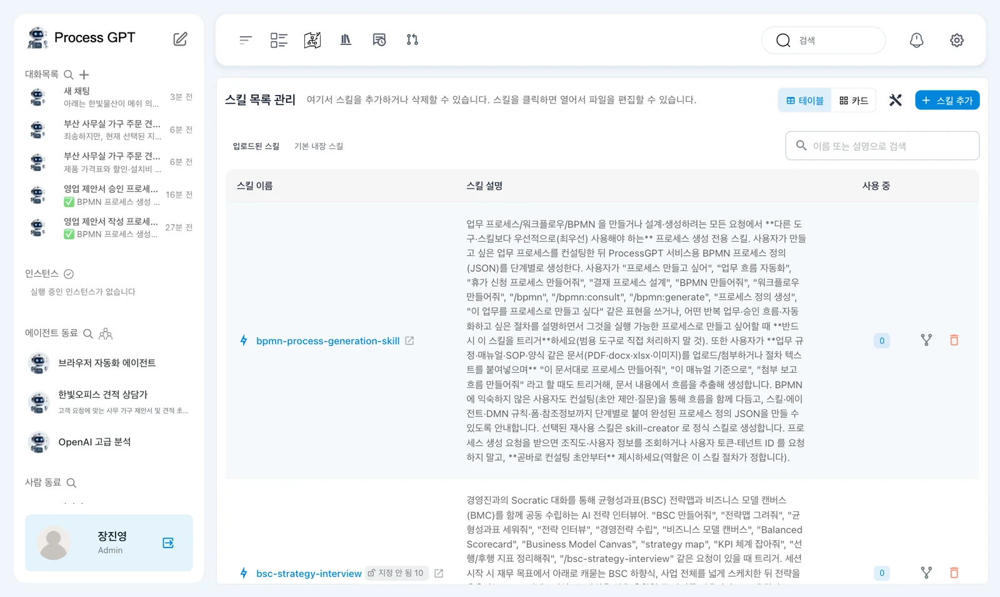
목록 위에는 「스킬 목록 관리 — 여기서 스킬을 추가하거나 삭제할 수 있습니다. 스킬을 클릭하면 열어서 파일을 편집할 수 있습니다.」라는 안내가 있습니다. 보기 방식은 「테이블」과 「카드」입니다.
촬영한 설치본에서는 처음부터 「bpmn-process-generation-skill」과 「bsc-strategy-interview」가 보였습니다. 이번에 올릴 파일과 이름을 구분합니다. 목록에 스킬이 있다는 사실만으로 견적 상담가에 연결된 것은 아닙니다.
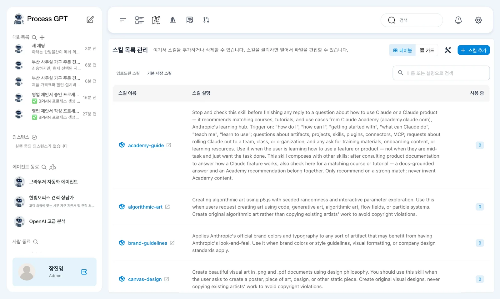
따라 하기 2 — 견적서 형식 파일 올리기#
실습 파일 hanbit-quote-format.zip을 내려받습니다. 압축 안에는 아래 내용의 SKILL.md가 들어 있습니다. 이 실습에서는 압축 파일을 그대로 올립니다.
---
name: hanbit-quote-format
description: 한빛오피스 고객에게 견적서나 견적 초안을 쓸 때마다 쓴다. 견적서의 모양, 합계를 적는 순서, 마지막 줄을 정한다.
---
# 한빛오피스 견적서 형식
고객에게 견적서를 쓸 때마다 아래 규칙을 따른다.
1. 제목은 `한빛오피스 견적서 — <고객사 이름>` 으로 시작한다.
2. 품목은 표 하나에 정확히 이 열로 쓴다: 품목 | 수량 | 단가(원) | 할인 | 금액(원).
3. 표 아래에 이 순서로 적는다: 제품 합계, 수량 할인, 설치비, 견적 총액(부가세 별도).
4. 가격·할인·설치비는 선택한 가격표에서만 가져온다. 가격표에 없는 값은 지어내지 말고 없다고 적는다.
5. 마지막 줄은 정확히 이 문장으로 끝낸다: `제안 유효기간 30일 · 한빛오피스 영업팀`
위쪽의 name은 스킬 이름입니다. description은 언제 사용할 규칙인지 설명합니다. 본문에서는 고객에게 견적서를 쓸 때마다 따를 다섯 가지 규칙을 정합니다.
- 목록 위의 「스킬 추가」를 누릅니다.
- 「파일 업로드」를 선택하고 내려받은 압축 파일을 올립니다.
- 「스킬이 추가되었습니다.」 안내를 확인합니다.
- 목록에서 「hanbit-quote-format」과 「사용 중」의 0을 확인합니다.
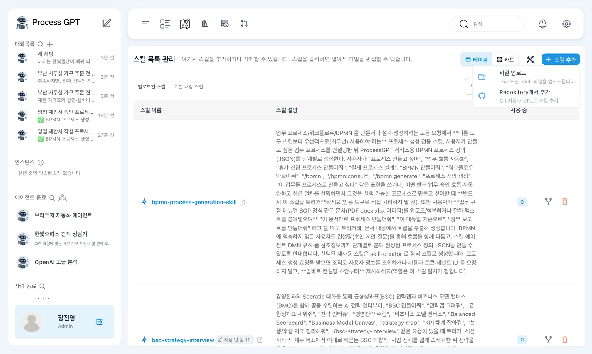
「파일 업로드」에는 「.zip 또는 .skill 파일을 업로드합니다」라는 설명이 있습니다. 「Repository에서 추가」는 「Git 저장소 URL로 스킬 추가」입니다. 이번에는 준비된 압축 파일을 사용합니다.
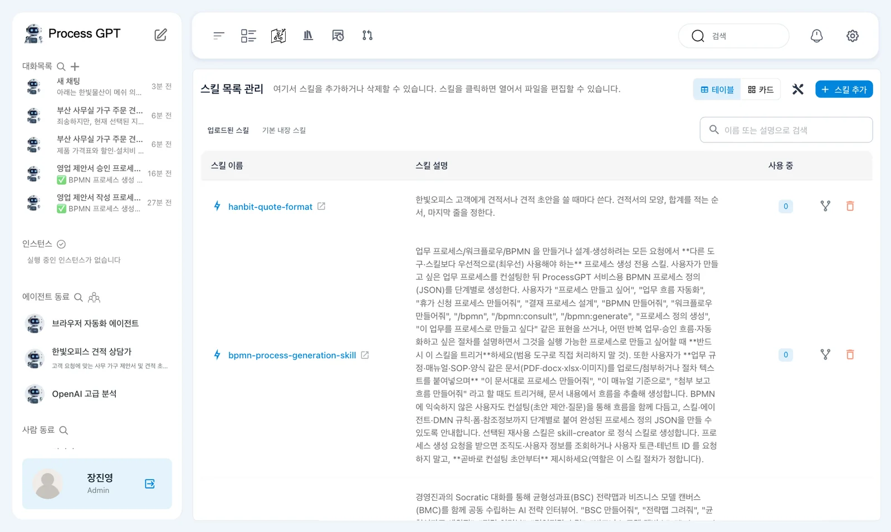
업로드 오류가 나면 설치 수정을 확인합니다
새 설치에서 처음 시도했을 때는 「Upload failed with error」가 나왔습니다. 스킬 등록에 필요한 DB 열이 없었던 문제입니다. 장 앞의 설치 수정에 포함되어 있습니다. 같은 오류가 나면 파일 내용부터 고치지 말고 설치 수정 적용 여부를 확인합니다.
따라 하기 3 — 파일을 열고 에이전트에 붙이기#
- 목록의 「hanbit-quote-format」을 눌러 상세 화면을 엽니다.
- 「파일」 탭에서 파일 트리와
SKILL.md편집기를 확인합니다. - 왼쪽 아래 「사용 중인 에이전트 (0)」을 확인합니다.
- 사이드바에서 에이전트 화면으로 이동합니다. 「한빛오피스 견적 상담가」 이름 옆 연필을 누릅니다.
- 「에이전트 수정」 창의 「스킬」 칸에서 「hanbit-quote-format」을 선택합니다.
- 선택한 스킬 칩을 확인하고 아래의 「수정」을 누릅니다.
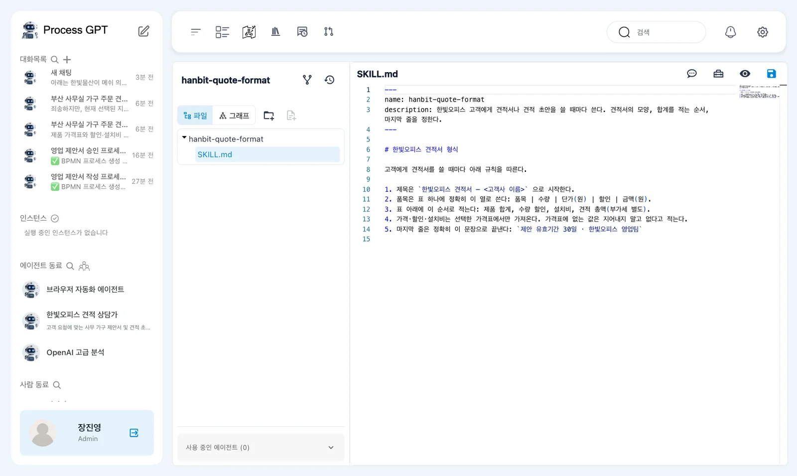
상세 화면에는 「파일」과 「그래프」 탭이 있습니다. 이번에는 파일에 적힌 규칙을 읽고 수정하는 데 집중합니다. 줄 번호가 있는 편집기에서 압축 파일에 넣은 내용이 그대로 열렸는지 확인합니다.
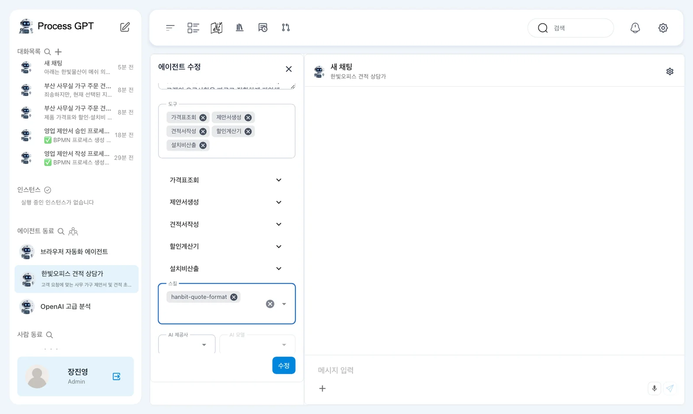
「에이전트 수정」에는 「이름」·「역할」·「목표」·「페르소나」·「도구」·「스킬」·「AI 제공사」·「AI 모델」이 있습니다. 이번에 바꾸는 칸은 「스킬」입니다.
도구 이름과 실제 연결을 구분합니다
촬영 화면의 「도구」에는 「가격표조회」·「제안서생성」·「견적서작성」·「할인계산기」·「설치비산출」이 들어 있었습니다. 9장의 AI 생성 과정에서 지어 넣은 이름이며, 연결된 MCP 서버는 없었습니다. 실제 외부 도구 연결은 14장에서 진행합니다.
따라 하기 4 — 적용한 형식 물어보기#
- 「한빛오피스 견적 상담가」 화면에서 아래 인사를 보냅니다.
- 열린 대화방에서 에이전트의 답을 읽습니다.
- 오른쪽 컨텍스트 패널의 「스킬」에 「hanbit-quote-format」이 표시되는지 확인합니다.
안녕하세요. 견적서를 쓸 때 어떤 형식을 따르는지 짧게 알려 주세요.
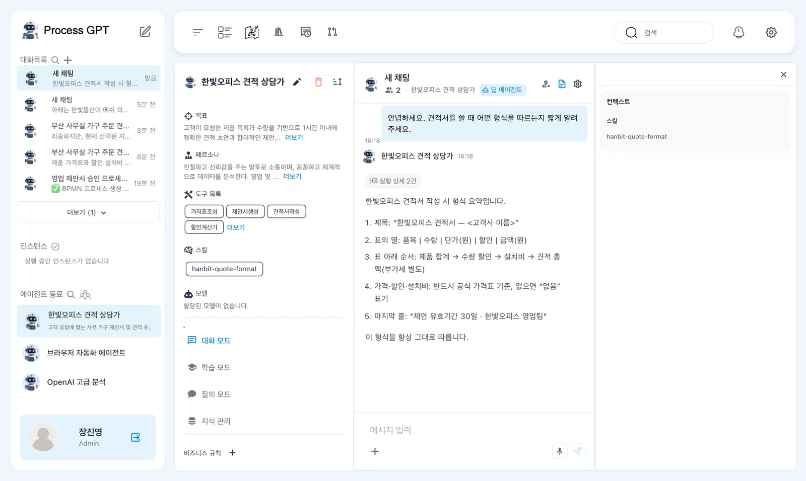
촬영에서는 에이전트가 규칙 1~5를 요약했습니다. 제목과 표의 열, 합계 순서, 가격표 사용, 마지막 문장을 설명하고 「이 형식을 항상 그대로 따릅니다」라고 답했습니다.
이 답은 규칙을 읽었다는 확인에 사용합니다. 실제 견적서에서도 모든 규칙을 지켰다는 뜻으로 받아들이지는 않습니다. 다음 요청에서 제목부터 계산 근거까지 직접 비교합니다.
따라 하기 5 — 가격표로 첫 견적서 만들기#
- 대화의 「＋」에서 「지식 베이스」를 엽니다.
- 「한빛오피스-영업자료」의 제품가격표를 선택합니다.
- 아래 요청을 보냅니다.
- 답이 나오면 제목, 표의 열, 합계 순서와 마지막 문장을 확인합니다.
선택한 지식 베이스의 가격표 문서를 찾아보고, 한빛물산이 메쉬 의자 에어 25개와 3단 이동 서랍 25개를 서울 본사로 주문하려고 해. 고객에게 보낼 견적서를 써 줘.
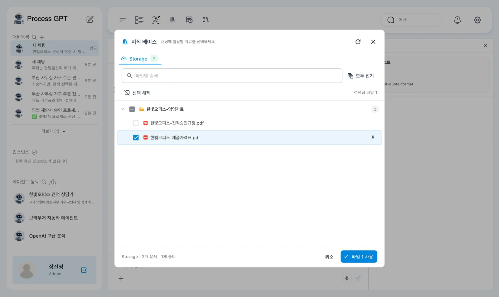
촬영에서는 약 30초 뒤 견적서가 나왔습니다. 오른쪽에는 「지식 베이스 1」과 「한빛오피스-제품가격표.pdf」가 표시되었습니다. 스킬과 가격표가 각각 어떤 역할을 했는지 답에서 확인합니다.
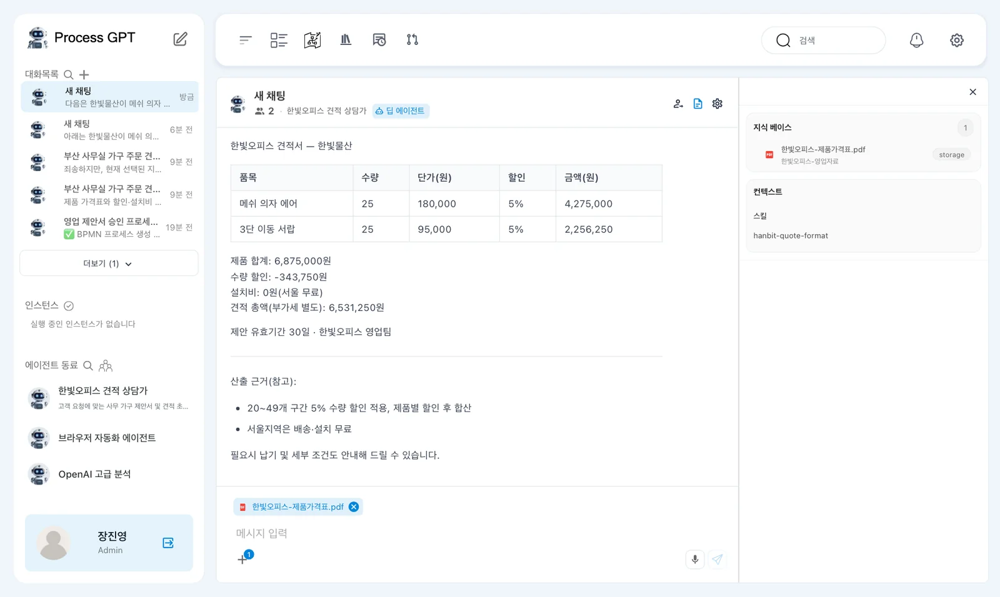
제목은 「한빛오피스 견적서 — 한빛물산」입니다. 표의 열은 「품목」·「수량」·「단가(원)」·「할인」·「금액(원)」입니다. 두 품목 모두 수량 25개와 할인 5%가 적혔습니다.
| 확인 항목 | 촬영에서 나온 값 |
|---|---|
| 메쉬 의자 에어 단가 | 180,000원 |
| 3단 이동 서랍 단가 | 95,000원 |
| 「제품 합계」 | 6,875,000원 |
| 「수량 할인」 | -343,750원 |
| 「설치비」 | 0원(서울 무료) |
| 「견적 총액(부가세 별도)」 | 6,531,250원 |
총액은 맞았습니다. 그러나 표의 「금액(원)」에는 할인 뒤 금액인 4,275,000원과 2,256,250원이 들어갔습니다. 표 아래 「제품 합계」는 할인 전 금액입니다. 표의 금액을 더하면 제품 합계와 달라집니다.
형식이 맞아도 금액의 뜻을 확인합니다
이번 답은 표의 금액과 제품 합계에 서로 다른 기준을 썼습니다. 총액만 확인하고 고객에게 보내지 않습니다. 표의 금액이 할인 전인지 할인 후인지, 합계 설명과 일치하는지 함께 확인합니다.
따라 하기 6 — 검산 규칙을 추가하고 저장하기#
첫 답을 보고 계산식을 보여 주는 규칙을 추가합니다. 스킬 목록에서 같은 파일을 엽니다. 기존 다섯 규칙은 남겨 두고 끝에 다음 한 줄을 붙입니다.
6. 답하기 전에 계산을 검산한다: 수량 할인 = 제품 합계 × 할인율, 제품 합계 − 수량 할인 + 설치비 = 견적 총액. 할인 계산식을 한 줄로 보여 준다.
- 「hanbit-quote-format」의
SKILL.md끝에 6번 규칙을 추가합니다. - 편집기 오른쪽 위의 저장을 누릅니다.
- 「Git 레포 없음」 창에서 「깃 없이 저장」을 누릅니다.
- 「스킬 파일이 성공적으로 저장되었습니다.」 안내를 확인합니다.
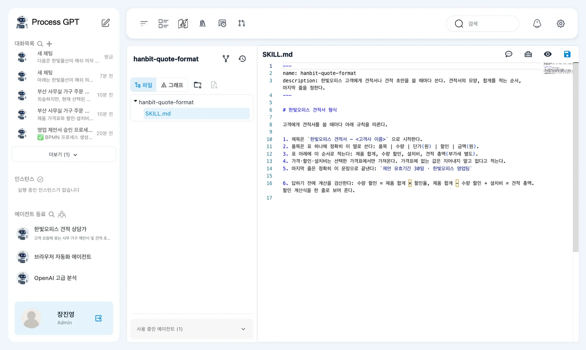
「Git 레포 없음」 창에는 연결된 Git 레포가 없다는 설명이 나옵니다. 단추는 「취소」·「깃 없이 저장」·「레포 생성 및 저장」입니다. 이번에는 파일 내용만 바로 저장합니다.
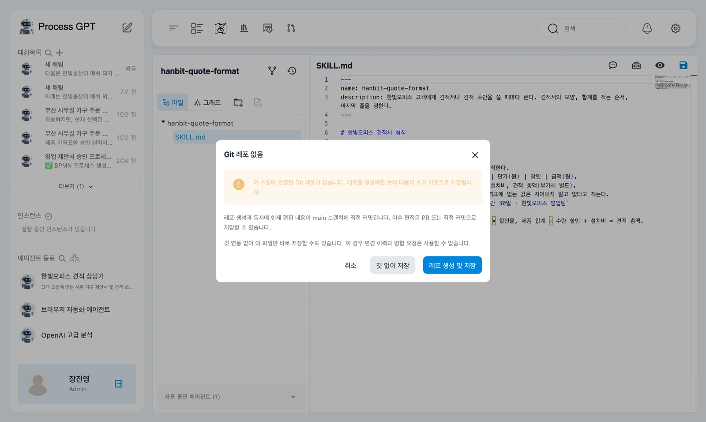
이번 저장에는 변경 이력이 없습니다
창의 안내처럼 「깃 없이 저장」을 사용하면 변경 이력과 병합 요청을 사용할 수 없습니다. 이 실습에서는 검산 규칙을 추가하고 대화 결과를 비교하는 데 사용합니다.
따라 하기 7 — 같은 요청으로 결과 비교하기#
- 앞에서 견적서를 받은 같은 대화방으로 돌아옵니다.
- 한빛물산의 의자 25개와 서랍 25개를 요청한 문장을 그대로 다시 보냅니다.
- 새 답에서 할인 계산식 한 줄이 추가되었는지 확인합니다.
- 표 아래 합계와 산출 근거에 적힌 합계를 서로 비교합니다.
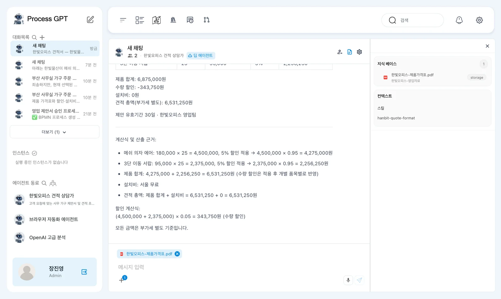
촬영에서는 약 30초 뒤 같은 형식의 답이 나왔습니다. 「계산식 및 산출 근거」에 다음 줄이 들어갔습니다.
「할인 계산식: (4,500,000 + 2,375,000) × 0.05 = 343,750원 (수량 할인)」
총액은 다시 6,531,250원이었습니다. 추가한 규칙은 할인 계산식을 보여 주는 데 반영되었습니다.
그러나 근거에는 「제품 합계: 4,275,000 + 2,256,250 = 6,531,250원」이라는 줄도 있었습니다. 위의 「제품 합계: 6,875,000원」과 어긋납니다. 할인 후 금액을 더한 결과를 제품 합계라고 부른 것입니다.
스킬을 수정한 뒤에는 바꾸려던 부분과 남은 오류를 따로 확인합니다. 이번에는 계산식 한 줄이 추가되었지만, 표와 합계의 뜻을 섞어 쓰는 문제는 남았습니다. 규칙을 저장했다는 사실만으로 견적서 검토를 끝내지 않습니다.
다음 장으로#
견적서 형식을 스킬로 등록하고 에이전트에 붙였습니다. 규칙을 고친 뒤 같은 요청으로 적용 결과와 남은 오류도 확인했습니다. 12장에서는 문서를 바탕으로 프로세스를 만듭니다. 선택한 워드 양식에 견적을 채우는 실습은 14장에서 이어집니다.
확인 문제
- 제품가격표와 이번 스킬은 각각 무엇을 정하나요?
- 스킬을 올린 직후 「사용 중」이 0이면 무엇을 더 해야 하나요?
- 검산 규칙을 추가한 뒤 해결된 점과 남은 오류는 무엇인가요?
답
- 제품가격표는 가격·할인·설치비의 근거입니다. 스킬은 견적서 제목, 표의 열, 합계 순서와 마지막 문장 등 작성 규칙을 정합니다.
- 「에이전트 수정」의 「스킬」 칸에서 「hanbit-quote-format」을 선택하고 「수정」을 눌러 연결합니다.
- 할인 계산식 한 줄이 추가되었습니다. 그러나 할인 전 제품 합계와 할인 후 금액의 합을 모두 제품 합계라고 쓰는 오류는 남았습니다.